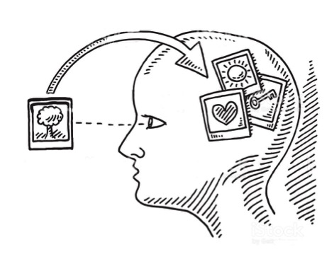

En este blog hablare, un mis experiencias como principiante del Skateboarding y como es mi
avance en este camino fascinante, aprenderás junto conmigo todos los trucos y secretos que
tiene este fantastico deporte, su historia y te daré algunos tips para que te animes como
yo, a empezar a patinar. Sabrás que pasos debes seguir para ser muy bueno patinando y
realizando trucos. Te dare algunos consejos para selecccionar tu primer skate o saber que
elegir en cada situación.
Después de leer y ver este blog te animarás a desarrolar este grandioso hobbie y hasta
quizás podras convertirte en todo un profesional del skateboarding.
Quizás después de leer este blog encuentres tu nueva afición favorita. Harás nuevos amigos y
te unirás a una comunidad llena de diversión.
El skateboarding no se trata solamente de ser un pro haciendo trucos o sabiendo más que los
demás, este deporte es para pasarlo bien, hacer un poco de ejercicio y tener diversión con
los amigos.
Desarrollo
Bienvenigo a SKATEBLOG, el blog que te dará horas de entretenimiento con retos o desafíos que
pondran a prueba tu paciencia y emociones, al intentar una y otravez los trucos, pero espera
no te desanimes, es parte del proceso, obviamente no todos los skaters sabemos hacer todos
los trucos y nadie nació sabiendo como andar en patineta por lo que no tienes nada por lo
que preocuparte, es parte del proceso de aprendizaje y aplica para TODO enserio... TODO.
Cómo aprendes a caminar, o a nadar o a tocar una guitarra; todo es practica y mucha
paciencia. Toma este desafío como un aprendizaje para el resto de tu vida.
La paciencia es lo más importante así como la perseverancia, todo lo que se desea se puede
conseguir con tiempo y esfuerzo.
Acompañame y aprendamos juntos un poquito más sobre el Skating, que dices ¿quieres andar ya?
Motivación
Hace 5 años me regalaron mi primera patineta, desde entonces he investigado y aprendido por
mi propia cuenta cómo se patina, realmente es algo sencillo si pierdes el miedo a el
movimiento. Más que nada se me hace genial el hecho de que una tabla con 4 ruedas te sirvan
de transporte y además ecológico.
El saber que con una patineta se pueden realizar acrobacias increibles y fascinantes para el
ojo humano es algo que me tiene impactado.
Bien esta ha sido toda la introducción pero antes de todo
es necesario decir que este deporte tiene seguro... seguro te rompes la... na no se crean
pero si es muy seguro que te caigas muuuchas veces así que ya sabes tienes que estar
preparado para uno que otro rasponsito. Insisto no hay que asustarse por muy feo que suene
el que te puedes caer; igual para eso existen las debidas protecciones, como rodilleras
coderas y casco sabías que hasta los más profesionales y experimentados las usan; así que no
te sientas avergonzado por usarlas y empieza ya a patinar.
Imagen ilustrativa de la introduccikón
Top 10
psicologos más importantes para la psicología de las emociones
15/10/21
10.William James
9.Daniel Goleman
8.Carl Lange
7.Paul Ekman
6.António Damásio
5.Robert C. Solomon
4.Stanley Schachter
3.Carroll Izard
2.Richard Lazarus
1.Peter Salovey
Psicologos
Sitios
para obtener mas información
15/10/21
Estudia e Investiga la Psicología
EMPEZEMOS
12/12/2021
Para empezar a conocer un poco sobre tug mente hemos preparado un video que eplica muy bien
lo
que es el cerbro
Autor: Diario Gestion Año:2020
Este video nos habla un poco a cerca de la mente y algunos detalles de este increible organo
Investigación
22/12/2021
Las reacciones
El estudio de la psicología de las emociones ha sido de gran interés desde el siglo pasado;
pero lamentablemente por cuestiones del destino no ha sido un campo muy explorado y por
tanto no ha sido uno de los grandes temas de la psicología como el aprendizaje, la atención,
y funciones cognitivas.
El poco estudio que ha tenido este tema ha provocado diferentes perspectivas del mismo ya
que no se han enfocado con los demás temas teniendo en cuenta las emociones y trabajando
solamente con inteligencia artificial.
Cada emoción tiene su propio modo de reacción fisiológica, que puede tener cambios en el
sistema nervioso.
35%
Así como estas reacciones existen un conjunto de variables llamado tendencia a la
acción estas acciones son la agresión, la curiosidad, la evitación o la adopción
de una cierta postura.
Una de las principales características de las emociones es dar respuesta a las diversas
situaciones y estas reacciones son un claro ejemplo de esto.
Así como esta variable existe otra parecida y esta es la experiencia subjetiva de la
emoción esta se refiere a lo que la gente experimenta en ciertas situaciones
como estar frustrado, estresado o irritado, son señales que las emociones mandan para llamar
nuestra atención; este tipo de reacciones es el campo más estudiado quizá como parte de
nuestras emociones.
Ahora bien, existe una cuarta variante de las reacciones y emociones y este es el sistema de
analisis y procesamiento de información mediante las emociones Ortony, Clore y Collins
(1988) propusieron que las emociones se producen a través de procesos cognitivos.
Esto quiere decir que en cada persona una misma situación va a provocar distintas emociones
en cada uno de ellos. Así como es muy distinta la percepción de una situación de desagrado
para cada quien, una de ellas puede ser la vergüenza, ya que habrá personas que puedan pasar
de ellas o algunas otras que se estanquen y pierdan el control.
La acción es el núcleo de una emoción según autores señalan que la
tendencia a la acción es parte la central o núcleo de una emoción y si nos ponemos a
pensar esto puede ser muy cierto ya que parte de la acción es la percepción de la misma y
con esto retomando el párrafo anterior cada persona tiene una distinta percepción y
diferente reacción con una emoción distinta. Por lo tanto esta reflexión es cierta,
cualquier acción da como fruto una reacción de emoción y esta varía dependiendo a qué acción
estemos percibiendo, un ejemplo sería el reaccionar de una manera enojada al ver que están
maltratando a un perro.
Distintas emociones
Percepción
¿Qué es la felicidad? la ira, el enojo etc. pues todas estas son consecuencias de una acción
por medio de la percepción de la misma acción, estas emociones suelen corresponder a una
experiencia corporal natural que luego se expresa de manera verbal, además de que primero
las expresamos de manera subjetiva es decir, en nuestro interior para después sacarlo en
nuestro lenguaje, y a esto le llamamos linea y existen varias.
La primera se ha centrado en el conjunto emoción y lenguaje. Su interés ha sido distinguir
la relación entre estos dos términos, es decir, si las emociones se pueden expresar en el
lenguaje o si por medio del lenguaje se accede a las emociones.
La segunda línea se ha establecido más en el estudio de la construcción social de las
emociones. El principal motivo ha sido distinguir los hechos antropológicos, cómo se
construyen las emociones siempre teniendo como base el discurso de Harré dado en 1984. Hay
una tercera línea la cual se concentra en la psicología discursiva tal como la propone Derek
Edwards y centra su interés en el estudio de las emociones, esto de construcción social se
refiere un poco más al hecho de que a base de un conjunto de personas podemos ver que dentro
de cada integrante según los demás reaccionen a las distintas situaciones ellos tendrán una
percepción u otra.
Una cuarta línea en investigaciones es especializada en el área de la construcción de las
emociones se dirige hacia los trabajos post-construccionistas, especialmente
usando un modelo de nociones sociales. Según Judith Butler la construcción de las
emociones es un procedimiento abierto a constantes transformaciones y redefiniciones
La quinta y además última línea se especializa en el área tecnocientífica. En
esta rama de investigaciones están constituidos los intereses comunes de filósofos,
epistemólogos y psicólogos que buscan en el proyecto de la máquina afectiva. Dentro de esta
línea también se pueden encontrar algunas investigaciones sobre el modelo del actor-red
Estas líneas, que mencionamos muy por encima, permiten demostrar que, más allá de las trabas
o los obstáculos y dificultades políticas, el estudio psicosocial de las emociones es un
área de estudio presente y aún más importante, con futuro. En este artículo hemos tratado de
distinguir el alcance y los límites del estudio de las emociones desde la perspectiva
construccionista, revisando algunos de los trabajos de mayor interés publicados en los
últimos veinte años.
Como fruto de este interés compartido por la construcción social de las emociones, en los
últimos 20 años se han realizado aportaciones que se sitúan a sí mismas en un nuevo espacio
denominado psicología discursiva de la emoción; espacio que se corresponde con la
tercera línea que hemos destacado.

Percepción de las situaciones
Emociones
Las emociones son reacciones que se activan cada vez que detectamos algún cambio importante,
lo que las hace un proceso de mucha adaptación, ya que tienen la propiedad de dar más
importancia a la información relevante. La emoción tiene como consecuencia un proceso
repetitivo de digerir información muy organizada, la cual establece tiempos y recursos para
proporcionar la respuesta más adecuada. Esta capacidad de adaptación de las emociones ha
hecho posible que los humanos podamos sobrevivir. Pero, las emociones son algo más que genes
bien estructurados, sino que tienen una alta plasticidad y capacidad para crecer,
evolucionar, desarrollarse y madurar.
Las emociones no son procesos estáticos, sino que van cambiando conforme a lo que el
entorno demande, por acción de las experiencias personales, y las sociales, su principal
función es organizar (por muy raro que parezca) nuestra actividad, y para esto las emociones
intervienen en los procesos cognitivos de la percepción, la atención, memoria, etc. Por
tanto las emociones son como un sistema de el procesamiento de la información que nos rodea,
y así también tiene influencia en cómo podemos sobrevivir. ¡No es genial!
Además se convierten en el proceso que coordina a los restantes recursos psicológicos
necesarios para dar la respuesta más rápida y precisa ante una situación concreta.
Las distintas funciones de las emociones, configuran un sistema de procesamiento de
información que pone en marcha las respuestas correctas a las emociones para cada situación
y esto para poder adaptarse y poder sobrevivir. Una segunda función es la social, mediante
la expresión nos podemos comunicar, las emociones actúan como estímulos discriminativos
que facilitan la realización de conductas sociales
La tercera función es para configurar un sistema de motivación y movilización de actitudes y
de comportamientos.
Mediante la formulación de las “leyes” o principios de las emociones se pretende
caracterizar las
condiciones y procesos que rigen el complejo mundo de las emociones.
El estudio del proceso emocional y su funcion en emociones concretas se distinguen en dos
conceptos: el estudio de las emociones específicas y la aproximación a ellas. La primera se
refiere a la existencia de características que distinguen cada emoción y a partir de las
cuales establecemos una diferencia entre emociones primarias (sorpresa, el asco, el miedo,
la alegría, la tristeza y la ira) y secundarias (culpa, vergüenza, orgullo, celos,
azoramiento, arrogancia, bochorno entre otras). El otro concepto sugiere que la lista de
emociones humanas puede cambiar de manera constante a lo largo de diversos factores
generales, a partir de las cuales se define el mapa de los estados emocionales
concretos.
 Introducción
Introducción 
.png) Sitios
para obtener mas información
Sitios
para obtener mas información
 EMPEZEMOS
EMPEZEMOS
 Investigación
Investigación